01
Общество и городская среда · событие дня
После несостоявшегося аукциона актив можно будет выставить на торги с понижением цены.…
Автомобилистам посоветовали своевременно заменить летнюю резину на зимнюю.…

В Ульяновске в 2027 году планируют заменить около 80 лифтов в 29 многоквартирных домах. Дополнительно городские власти намерены включить в программу ещё порядка 70 подъёмников, срок службы которых истёк.…
президент поздравил Фёдора Щукина с избранием на должность главы…
Глава города Александр Болдакин ранее поставил задачу содержать в соответствующем состоянии и своевременно вывозить строительный мусор с указанной площадки, а в перспективе – проработать варианты создания здесь общественного пространства для жителей микрорайона.…
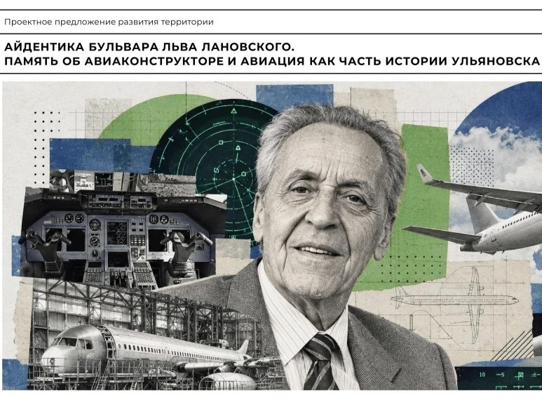
Для этого по поручению главы областного центра Александра Болдакина МБУ «Городской центр по благоустройству и озеленению» из собственного питомника предоставил местным жителям 57 саженцев деревьев.…
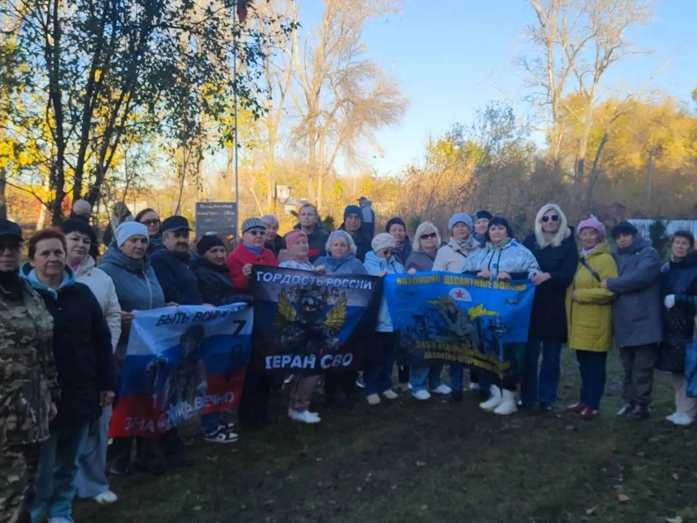
Автомобилистам посоветовали своевременно заменить летнюю резину на зимнюю.…
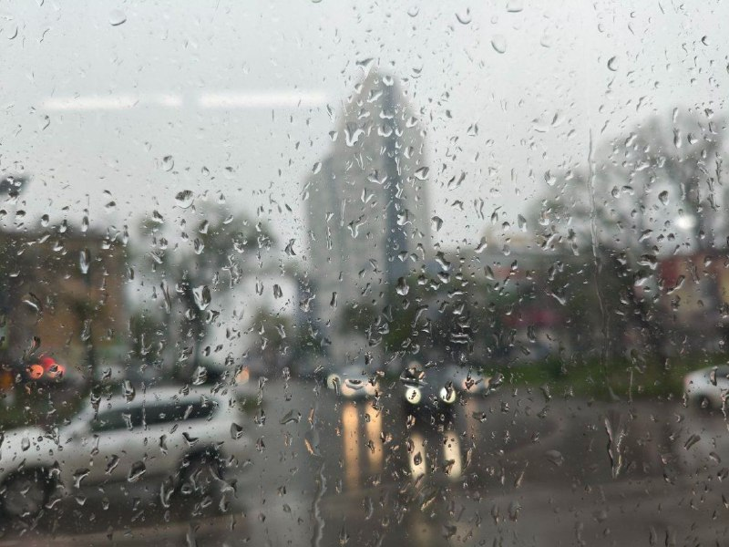
erid: 2Vfnxy7vyAu С 1 октября 2026 года семейная ипотека в Ульяновской области стала по-настоящему «богатырской»: плечо поддержки от государства теперь напрямую зависит от количества детей в семье.…


В Ульяновске завершили ремонт 220-метрового участка канализации под площадью Ленина.…

В Ульяновске дорожные службы усилят обработку улиц и тротуаров противогололёдными материалами.…

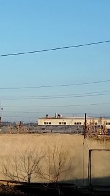
Верный признак Рабочие с утра моют крыши зданий ООО «Вираж» от налёта, гари и копоти.…
Great Wall Motor рассматривает два варианта: разработку обновлённого M6 с увеличенной долей российских комплектующих или замену модели на более прибыльный кроссовер.…
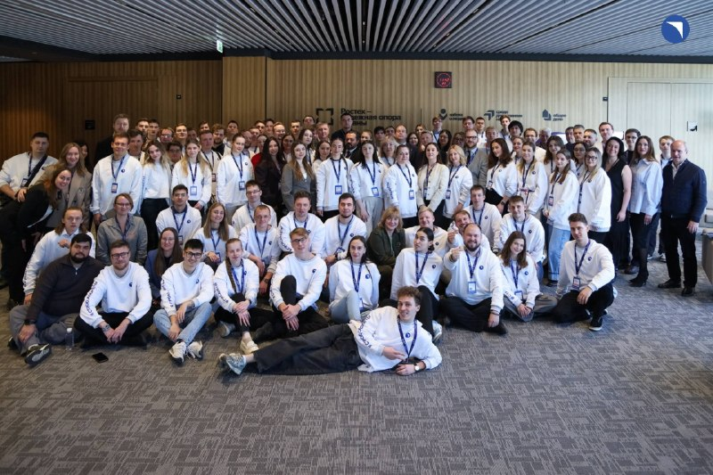
На дорожный фонд планируют направить 95,3 млн рублей — почти в семь раз меньше суммы на обслуживание долга.…
Для реализации своего плана злоумышленники оформили ряд юридических организаций, связанных с лесозаготовкой, покупкой и продажей строительных материалов, а также изготовлением мебели.…
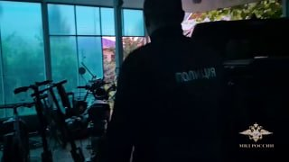
Город годами перекрывает старые долги новыми, а на развитие остаются крохи.…
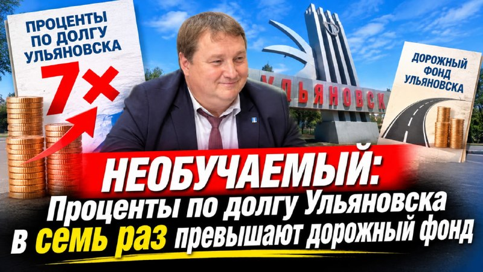
рублей, а 32% готовы сменить профессию ради более высокого дохода. А вас сколько устроит?…
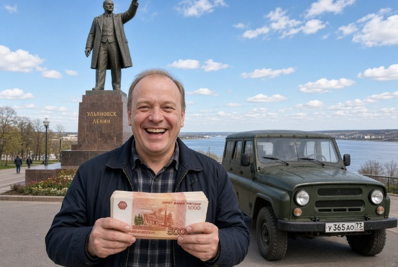
🔹 12600 кВт для БАМа и Транссиба: собран первый магистральный грузовой электровоз нового поколения На Новочеркасском электровозостроительном заводе завершены сборка и окраска первого опытного образца нового отечественного магистрального грузового электровоза переменного тока 2ЭС9 с асинхронным тяговым приводом.……
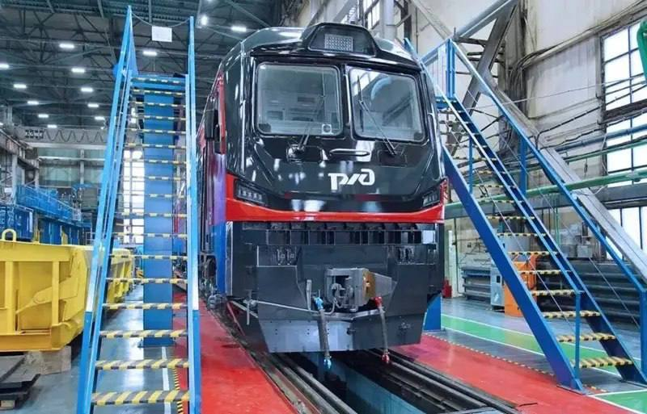
Именно инженерные команды создают технологии сегодняшнего дня и формируют технологическое будущее России», Денис Мантуров.…
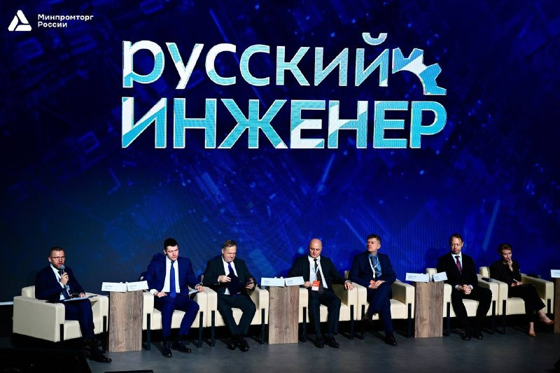
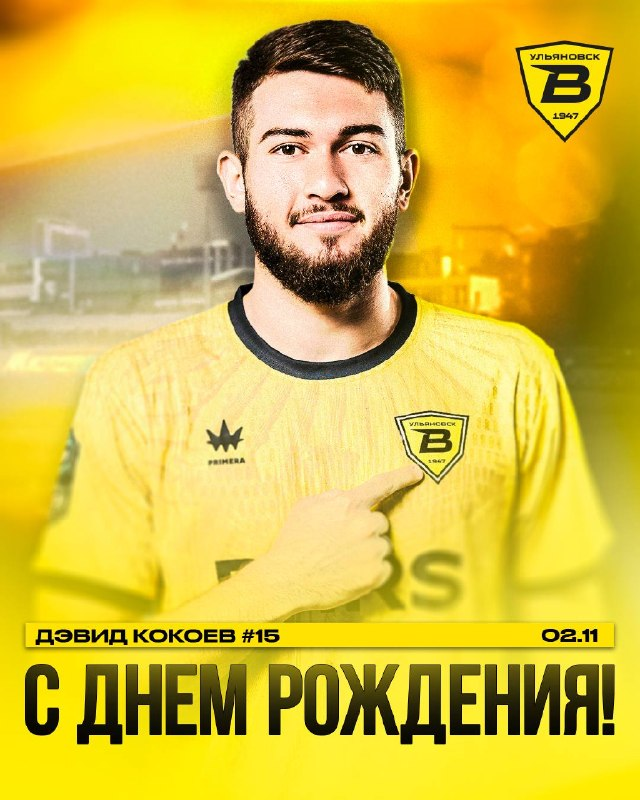
В Заволжском районе Ульяновска 31 октября водитель «Лады Гранты» сбил пожилого велосипедиста.…

О профилактике гриппа, симптомах и вакцинации — в карточках 👆 🇷🇺 Ульяновская область в…
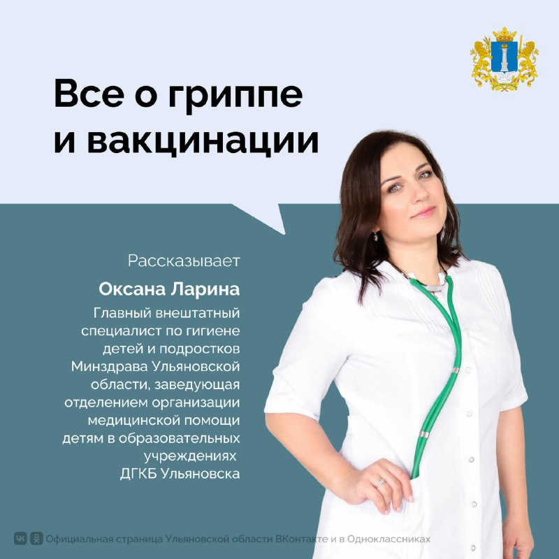
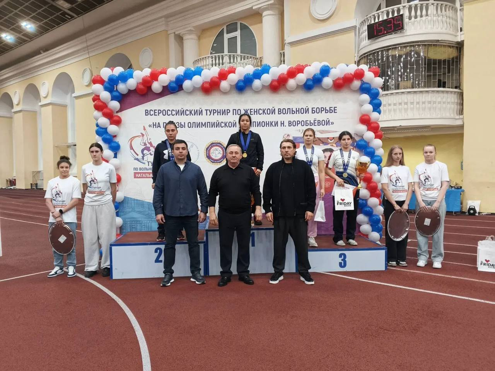
Ульяновская спортсменка Римма Афанасьева завоевала бронзовую медаль на Всероссийских соревнованиях по вольной борьбе среди юниорок до 21 года. Об этом сообщили в региональном Министерстве спорта.…
Наставник команды Александр Сметанин признал, что чемпионский костяк удалось сохранить, но из-за нехватки предсезонной практики пришлось понервничать.…
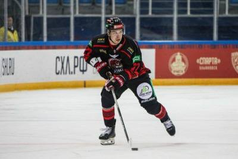
Выйдет 13 ноября, вот ссылка на пресейв: https://band.link/RKpz4 А пока — небольшой…
25 октября в Ульяновске состоялся Кубок региона по баскетболу 3Х3.…
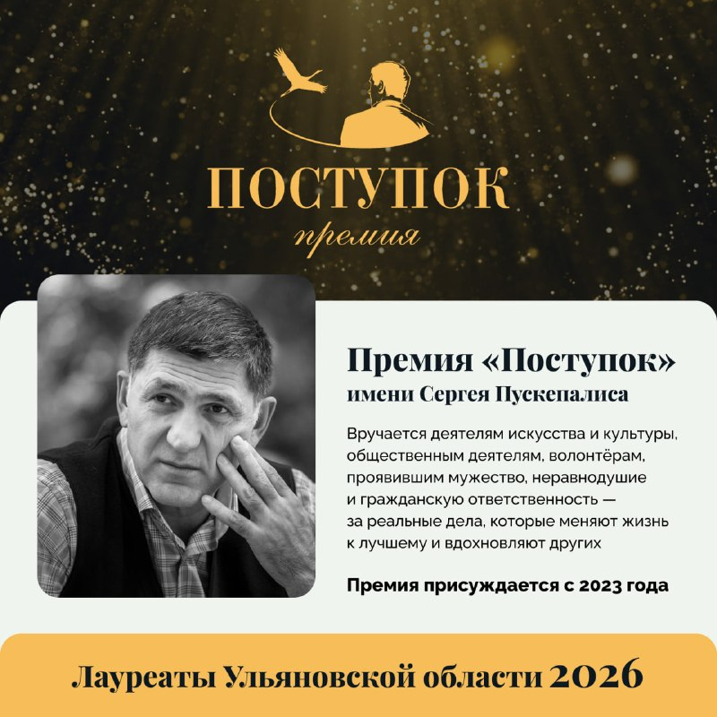
С начала СВО Сергей Пускепалис не оставался в стороне, поддерживал гуманитарные инициативы, помогал жителям Донбасса, искренне верил, что даже маленький поступок может многое изменить.…
Напомним, акция приурочена ко Дню народного единства, а девиз этого года — «В единстве культур — сила народа».…
В Beget подтвердили крупный инцидент: он затрагивает все уровни архитектуры, поэтому инженеры вручную настраивают инфраструктуру прямо в дата-центрах.…
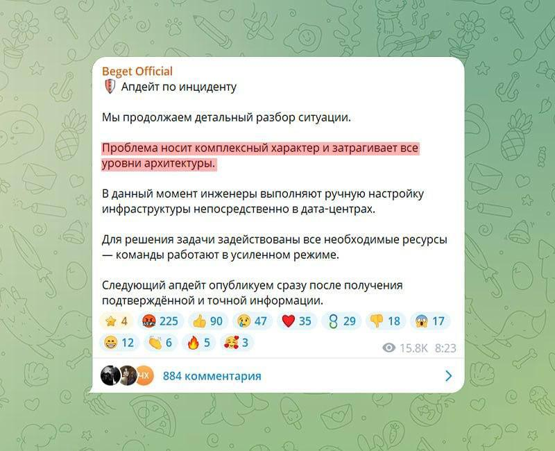
Музыка придётся по душе любителям рок-н-ролла, новой волны, чёрно-белого кинематографа и авангардной живописи.…

Приехала экосистема, выкинули только из бака, остальное просто расшвыряли, т.к. пакеты мешали вывезти бак, и уехали.…
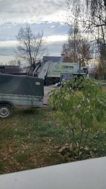
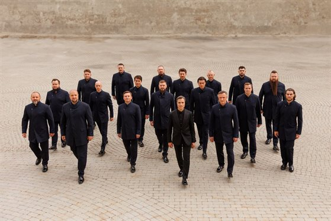
31 октябрьдә Иске Кулаткы районының Х. А.…
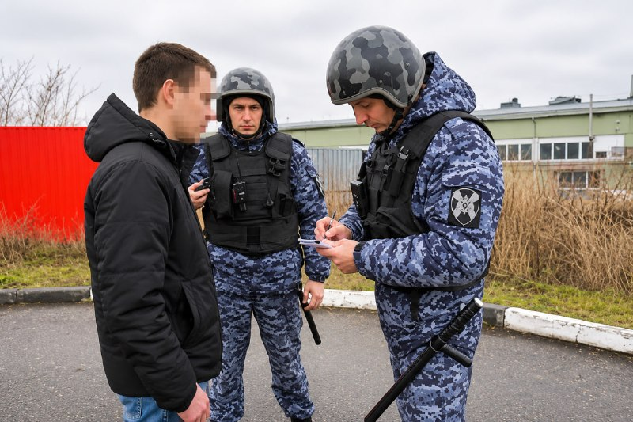
Три несовершеннолетних жителя Чердаклинского района пронесли мимо кассы энергетики и ореховую пасту. Ущерб получился внушительный — больше 13 тысяч рублей.…
В Димитровграде задержали группу подростков, которых подозревают в краже безалкогольных напитков и ореховой пасты из гипермаркета на улице Свирской.…

Для этого они заключали договоры с завышенными на 30-40% объёмами работ и поставок.…
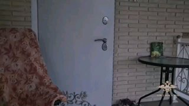
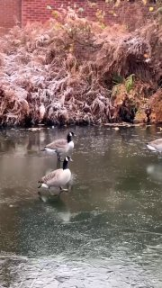
В Старомайнском районе 31 октября Renault Logan врезался в опору линии электропередачи.…

В одной из обесточенных квартир живёт ульяновец с аппаратом «механическое сердце».…
В редакцию «Улпрессы» обратились жители дома №9/10 на улице Гагарина.…

По информации ответственных служб, ремонт электросетей будет произведён в течение 3-4 дней.…
В церемонии отправки приняли участие Ульяновские коммунисты сенатор Айрат Гибатдинов и Алексей Кривов.…
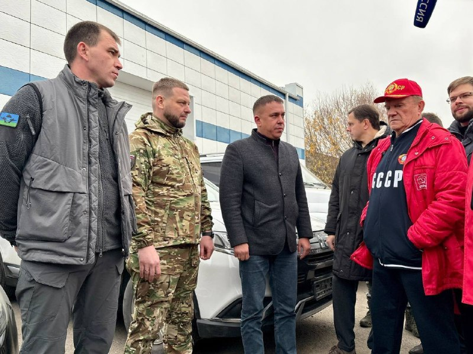
В Засвияжском районе Ульяновска 1 ноября столкнулись четыре автомобиля. ДТП произошло в 11:08 напротив дома №48 по улице Ефремова.…

В Ульяновской области с января по 31 октября 2026 года Россельхознадзор признал недействительной 141 декларацию на зерно общей массой 235,85 тысячи тонн.…

По словам потерпевшей, менеджер под видом сопровождения финансовых операций направляла клиентку и просила сообщать коды подтверждения.…
📅 11.11 — твой знак наконец-то сменить iPhone!…
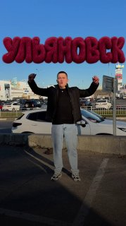
В остальное время он не работает. Фото сделаны с интервалом в час», — сообщает подписчик.…
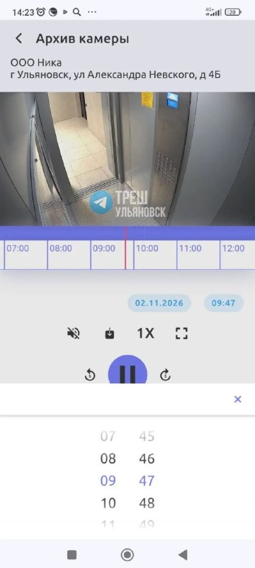
Госавтоинспекция региона напоминает водителям о необходимости сменить летнюю резину на зимнюю.…
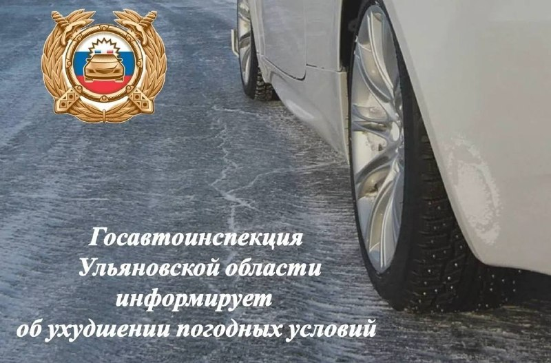

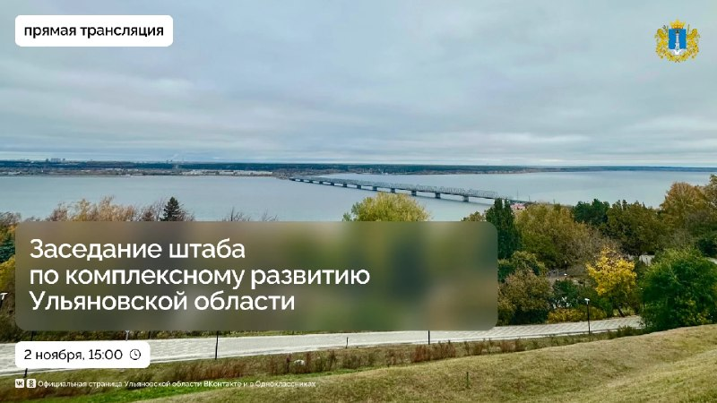
Пока же к уборке отходов с контейнерных площадок подключат городскую технику.…
На Нижней террасе Ульяновска возле дома №32 на улице Ленинградской жители высадили 57 деревьев в память о погибших участниках СВО.…
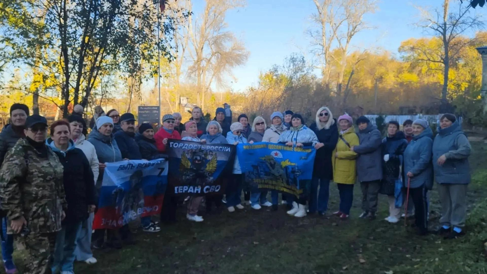
В Железнодорожном районе Ульяновска жители жалуются на скопление мусора возле контейнерных площадок.…

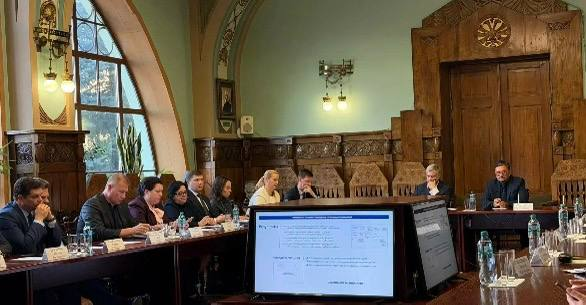
По замыслу университета, проекты должны помочь удержать выпускников в Ульяновской области.…
При этом властям и бизнесу придется пересмотреть подход к школьному образованию, ведь профильные классы в регионе сейчас работают скорее «для галочки».…

Об этом сообщил заместитель главного конструктора китайской программы пилотируемой космонавтики и главный конструктор программы исследования Луны Ван Сян .…

В один из октябрьских дней в филиале МОУ Новочеремшанская СШ в селе Вороний Куст царила особая атмосфера — тёплая, немного волнительная и очень искренняя.…
Шесть лет на посту министра Семёновой увенчались откровенной профанацией: молодым учителям нужны достойные зарплаты, а опытным наставникам — реальная оплата за шефство над коллегами.……

| Тема | Завтра | Ожидание | Уверенность |
|---|---|---|---|
| Суды и криминал | ↓ спад | ~18.8 упоминаний | средняя |
| Школы и вузы | ↓ спад | ~7.4 упоминаний | средняя |
| Бюджет-2027 | ↓ спад | ~13.3 упоминаний | средняя |
| Губернатор / власть | ↓ спад | ~28.9 упоминаний | средняя |
| БПЛА и воздушные угрозы | ↑ рост | ~18.0 упоминаний | средняя |
| Экспорт и кооперация | ↓ спад | ~4.7 упоминаний | средняя |